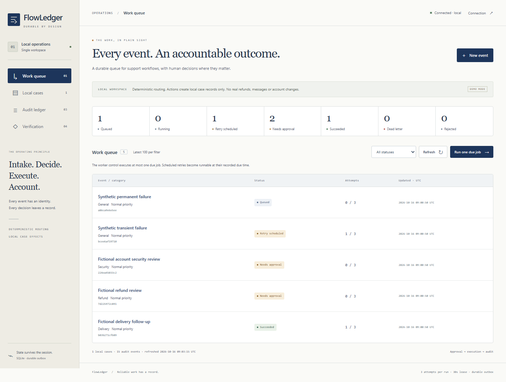
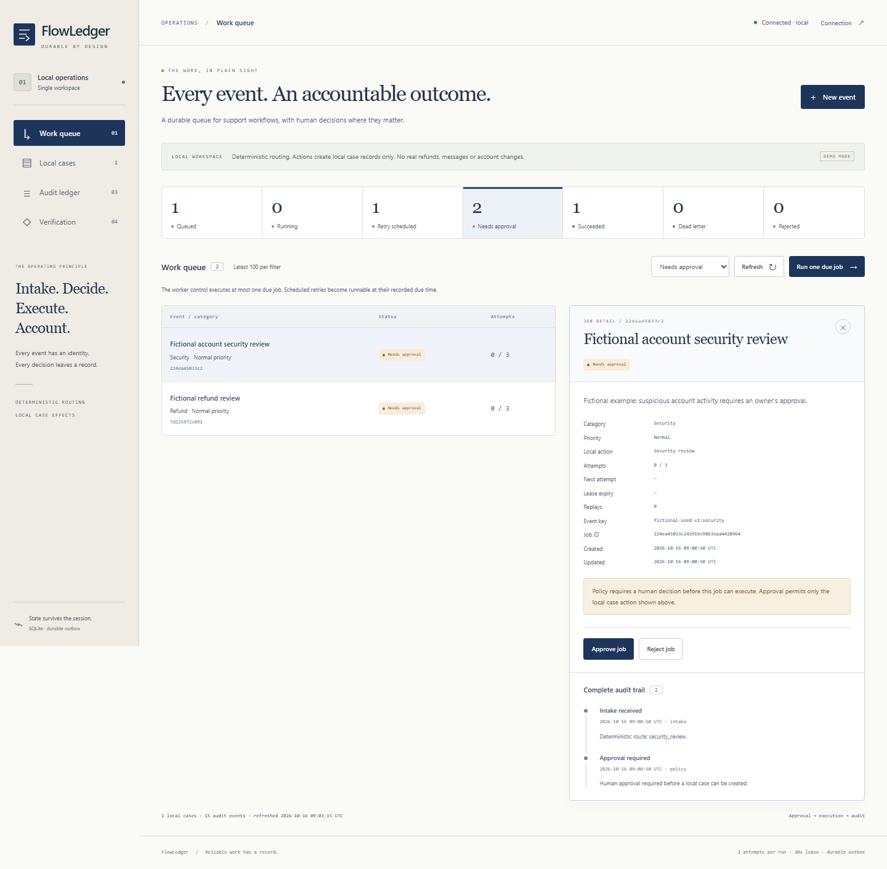

Personal project / Reliable automation
FlowLedger
An automation is only useful if its effects remain understandable after a duplicate event, a retry or a worker crash. A durable support workflow service with an inspectable operator console.

The problem
Support automations can receive the same event twice or fail after applying an effect but before recording success. FlowLedger makes that lifecycle explicit: what was requested, who approved it, what actually happened and whether retrying will create a second case.
How the system works
- Validate typed support events and idempotency keys. Repeated matching input returns the existing job; a conflicting payload is rejected.
- Persist the event, outbox intent and initial audit atomically. Refund and security events wait for an explicit approval or rejection decision.
- Claim due work with bounded leases and fencing tokens. A separate polling worker executes local case actions; stale workers cannot acknowledge another worker's job.
- Retry transient failures, preserve exhausted work for inspection and allow deliberate replay. Reconcile a committed effect after an interrupted acknowledgement using the connector's unique event identity.
FastAPI and Pydantic provide the request contracts. SQLite WAL holds durable jobs, audit events and case effects. The same-origin console reads real queue state, attempts, decisions, due times and errors. Routing is deterministic; rules are not presented as AI.

Executed reliability evidence
On 16 October 2026, 20 backend tests and Ruff checks passed locally. The independent verification command passed all nine experiments below against isolated fictional SQLite workspaces. Counts are local correctness checks, not a throughput benchmark.
| Experiment | Observed result |
|---|---|
| Concurrent duplicate intake | 12 submissions → 1 job, 11 duplicates; conflicting payload rejected |
| Concurrent worker claims | 8 worker threads → 16 completed jobs, 16 cases, 0 duplicate effects |
| Approval and rejection | 0 effects before approval; 1 approved case and 1 rejected job |
| Retry timing and exhaustion | Early claims blocked; 2s/4s backoff; exhausted work dead-lettered |
| Expired lease fencing | 3 stale mutations rejected; 0 stale audit writes |
| Replay after committed effect | 1 replay retained 1 local case and 1 event; 0 duplicate effects |
| Independent polling process | Separate Python process completed 5 jobs and persisted 5 cases |
| Crash after first-attempt effect | Real process exit 86; restart recovered success with 1 local case |
| Crash after final-attempt effect | Real process exit 86 on attempt 3; restart retained 1 local case |
Read the executed reliability report
Retry and lease-boundary experiments inject UTC while executing real SQLite transitions.
The two crash experiments use actual subprocess os._exit(86) after case
commit and before acknowledgement, a one-second lease override and a real system-clock
wait. The ordinary lease setting is 30 seconds.
Sixteen browser checks passed, including five tests containing explicitly simulated error boundaries, plus a separate screenshot-capture check. The tested desktop, mobile and narrow views had no page overflow or Axe WCAG A/AA violations. These checks cover the inspected views and interactions, not a complete accessibility certification.
The effect boundary
The connector writes persistent local case records with a unique event key. That contract prevents duplicate local effects during these retries; it is not a universal exactly-once delivery guarantee. A remote connector needs its own idempotency and reconciliation contract. The service does not issue refunds, send messages or lock customer accounts.
This is a bounded single-workspace service. Decision actors are owner-supplied labels, not independently verified identities. No multi-tenant authorization, external integration, customer usage, business savings or production-scale reliability is claimed.
Contribution and local setup
Personal project developed with Codex assistance. The repository documents implementation, executable checks and limits. This is personal project work, not prior automation engineering employment or independently assessed individual proficiency.
From the reviewed FlowLedger project folder, run the commands below with Python 3.12+. No API key, model download or paid service is required. Demo mode explicitly enables clearly fictional example events and controlled failure injection.
python -m venv .venv
.\.venv\Scripts\Activate.ps1
python -m pip install -c requirements.lock -e '.[dev]'
$env:FLOW_DEMO_MODE = '1'
python -m flowledger --port 8012
# In another terminal, using the same environment and database
python -m flowledger.worker
# Reproduce backend checks and isolated fault experiments
python -m pytest -q
python -m flowledger.verify
Open http://127.0.0.1:8012.
Hosted verification and the Docker image build passed
for the native Python service. The public edge edition is a bounded synthetic workflow
demo; use the repository for full lease, retry and crash-recovery experiments.